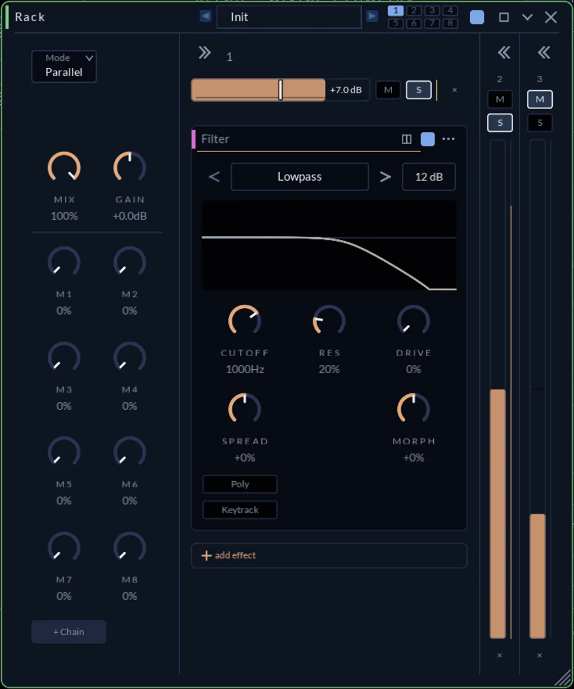
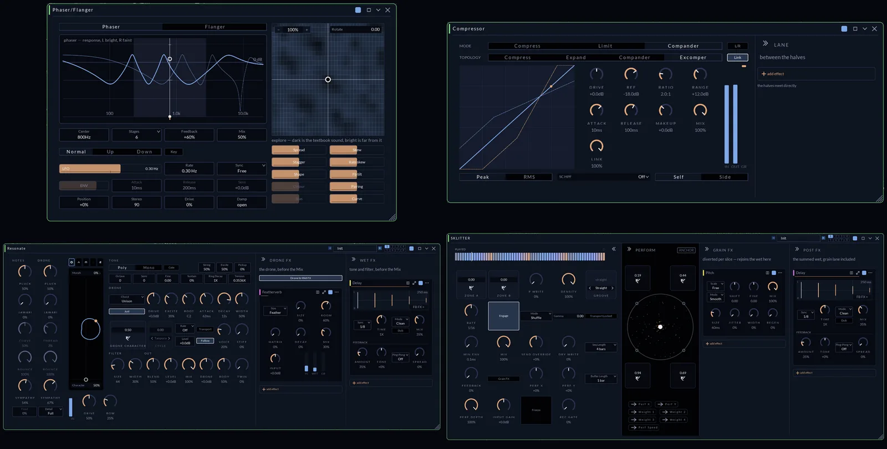

Feathers
A terrain-based procedural synthesizer for CLAP and VST3, with a modular effects rack. Every sound is a position on a terrain. Eight engines read it: procedural wavetables, additive spectra, plucked strings, drums.

Install
One line downloads the latest release, checks it, and installs the synth and the Chain (CLAP and VST3) into the user plugin folders.
macOS and Linux (Terminal)
curl -fsSL https://labs.owletrecords.com/feathers/install.sh | bashWindows (PowerShell)
irm https://labs.owletrecords.com/feathers/install.ps1 | iexRestart the DAW or rescan plugins. Manual download: the zip for each platform is on the latest release; SHA256SUMS.txt verifies it. Scripts: install.sh, install.ps1. Per-platform notes: the README.
Pre-1.0. Patches and presets are not stable before 1.0. A later build may load a saved patch, preset or DAW project differently, or not restore parts of it. Keep bounces of anything that matters.
Overview
A synthesizer, a modulation system and a rack of effects. Modulators and effects are added, moved and removed the same way. Effects can hold chains and racks.
Terrain
The terrain is a field with no edges. Every position is a different sound. In Morph, Stair and Forge it is a procedural wavetable, a waveform computed for each position; in the other engines it sets a spectrum, a string or a drum. The Explore surface shows it under the puck. It can be mutated, with undo and redo. Engines are tabled below.
Likes. Hearting a sound bends the terrain toward it.
Perform. Sounds become waypoints, stars in a blend circle. One puck interpolates between all their settings. A modulator routed to the puck position steps through the waypoints.


The engines
One terrain, eight engines. The engine decides what a position becomes.
| Engine | Sound | What the terrain shapes |
|---|---|---|
| Morph | A procedural wavetable: a waveform drawn through a chain of waypoints. | The shape of the waveform at every position. |
| Stair | A procedural wavetable built as a staircase of up to sixteen steps, from hard edges to smooth ramps. | The height and width of each step, and how steep the risers are. |
| Forge | A procedural wavetable: Morph's waveform pushed through hard sync, self-feedback and quantize. | The waveform, and how much of each of the three operators it gets. |
| Resonate | A resonator model of a string, bar, tube or membrane. | |
| Basic Shapes | Sine, triangle, saw and square, mixed together. | How much FM each position applies. |
| Additive | A sound built from a spectrum of sine partials, with a spectrum panel for reshaping them. | The partial spectrum: how loud each partial is and how bright the sound. |
| Pluck | A plucked string. | The brightness and noise of the pluck, where it is picked, how long it rings and how sharp its upper partials are. |
| Drum | Layered drum synthesis: kick, membrane, snare, metal, clap and string kinds, in an eight-pad kit. | The same seven qualities for every kind (pitch sweep, tone, snap, decay and the like), so a place keeps its meaning from one kind to the next. |
Modulation
Modulators sit in their own lane and are managed like effects: DAHDSR, LFO, MSEG, Math, Twin Field, Pattern, Step Seq, Sample & Hold, Random Trigger, Follower, Macros and Note Expressions. Any of them can be routed to almost any knob, on the synth or an effect.
- Response: each route is linear, exponential or logarithmic, or rectifies a bipolar source.
- Display: a modulated knob shows a ring and its live value. Selecting a modulator lights every knob it can reach.
- Random values persist: random and held values are saved with the patch.

Effects
Effects sit in a lane. Each has a compact card and a larger window with every card control and usually more. Several hold effects of their own: a filter in the Delay feedback, or processing in the middle of the Compressor.


Racks
Chain and Rack devices nest chains, in series or in parallel, to any depth. A Rack mode sets what each chain hears and how the chains recombine.
- Parallel
- Every chain hears the input, and their outputs sum.
- Select and Blend
- A Position control picks one chain or crossfades between neighbours. Modulated, it switches or morphs.
- Mid/Side and Left/Right
- One chain per half of the signal.
- Bands
- Multiband split into 2, 3 or 5 bands with adjustable crossovers and slope, one chain per band. Band filtering sits before the chain, after it (harmonics the chain creates stay in its band), or both. With Key Track, the played note places the crossovers.
Device standard
Every effect and modulator is a device built on one shared design. A device declares its controls (names, ranges, units, choices) and what it does with audio, modulation and notes. It can draw its own card and window or use the standard card. The same devices run in Feathers and in Feathers Chain. The aim is a standard other plugin makers can build on.
The device SDK in the repository is MIT-licensed: devices built on it can be open or closed source. Feathers itself stays GPL-3.0-or-later. The design is not final. Plugin makers who would build on it are invited to shape it.
Hosting
Built: any control, at any depth in chains and racks, reaches the DAW, in CLAP and VST3. The synth's own parameters are always available. Device controls share 256 host slots. A touched control takes a slot automatically; when all 256 are in use, the least recently used is reused. Right-click a control and choose "Expose to host" to pin it. Turning a knob records automation; DAW automation and modulation move the knob. Slots are saved with the project.
Planned, not built: hosting other CLAP and VST3 plugins inside chains and racks, and third-party devices that look and modulate like Feathers' own.
Platforms
Linux x86-64
First-class. Developed and played on Linux daily, in Bitwig. Every pre-release build ships for it.
macOS universal
Apple silicon and Intel in one build. Signed ad hoc, not notarised. The one-line installer uses curl, which macOS does not quarantine. A browser download needs the README's unquarantine step.
Windows x86-64
The editor is new. It passes tests on CI, but has not yet been played on a Windows machine by the team. Please report problems.
Each build holds the synth and the Chain as CLAP and VST3. Linux and Windows builds also include the synth standalone.
Open source
The Feathers core is open source under the GNU General Public License, version 3 or later, and stays so. The device standard lets anyone build devices on it. Wanted: collaborators (DSP, UI, platform; C++, test-heavy codebase) and sound designers, producers and performers to try pre-release builds and report.
Every device
Effects, modulators, note devices and containers. Generated from the devices' own declarations.
| Device | Description | Extras |
|---|---|---|
| Filter & EQ | ||
| Drawn | A filter whose response is drawn: four frames blended on an XY pad. | Window |
| EQ | Parametric EQ for surgical and mastering work, with an analyser. | Window, Keytrack, Linear phase, Latency |
| Filter | Multimode filter: lowpass, bandpass, highpass and more, with drive, spread and morph. | Poly, Keytrack |
| Resonate | Scanned-string resonator: bowed and plucked notes plus a drone, with effects lanes for each. | Window, Note input, Note output, Latency |
| Spectral | Spectral effect: the Additive engine's partial operators applied to any audio. | Window, Poly, Keytrack, Sidechain, Latency |
| Waypoint | Four filter states on a plane, and one Morph that walks between them. | Window, Poly, Keytrack |
| Dynamics | ||
| Compressor | Compressor, limiter and compander, with a lane between the compander's halves. | Window, Sidechain, Latency |
| OWLTT | Three-band upward and downward compressor, with Character and Vibe zones. | Window, Keytrack, Latency |
| Drive & Colour | ||
| Clipper | Clipper with five characters and 4x oversampling. | Latency |
| Eroder | A very short comb whose delay is shaken by filtered noise, then soft-clipped and folded. | Window, Keytrack |
| Shaper | Table waveshaper whose curve is a place in a φ-field rather than a preset. | Window, Poly |
| Smooth Shaper | Eight waveshapers behind one knob, and a Twist that sweeps four modifiers at once. | Window, Poly |
| Time & Space | ||
| Delay | Delay with Clean, Granular, Xfade, Tape, Multi-Tap, Reverse and Buckets modes, and an effects lane in its feedback loop. | Window |
| Featherverb | An algorithmic reverb, extended with a convolution section. | Window |
| Pitch | ||
| Pitch | Pitch shifter, with an option to lock to a scale. | |
| Rhythm & Glitch | ||
| SKLITTER | Stutterer: eight slicing modes over one ring buffer, a perform circle, grain and post lanes. | Window, Mod outputs, Latency |
| Modulation FX | ||
| Automod | The Automodulator: an auto-wah whose filter, comb and envelope response are read from one position in the φ-field. | Window, Keytrack |
| Disperser | A dispersion (allpass group-delay) effect. | Window, Keytrack |
| Phaser/Flanger | Phaser and flanger, with a response view and an explore field. | Window, Keytrack, Latency |
| Utility | ||
| Bus Utility | Gain, pan, dual pan, width and polarity. | |
| Harm | Strips the fundamental with a note-tracking notch and puts a clean sine sub-harmonic back. | Window, Poly |
| Noise | Adds noise or pseudorandom impulses to whatever passes, through its own filter. | Poly, Keytrack, Mod outputs |
| Sidechain Inject | Brings the plugin's sidechain input into the chain at this point. | Sidechain |
| Stereo Balance | Work in progress: splits the signal into comb bands and corrects each band's left/right balance, with Widen, Pan and a goniometer. | Window, Keytrack |
| Modulators | ||
| DAHDSR | Delay, attack, hold, decay, sustain, release envelope. | Mod outputs, Note input |
| Follower | Envelope follower, and a threshold that turns any signal into trigger pulses. | Poly, Mod outputs |
| LFO | Low-frequency oscillator with shapes, sync, phase and its own preview. | Mod outputs, Note input |
| Macro 1 | One macro knob as a modulator device. | Mod outputs |
| Macros | Four macro knobs as a modulator device. | Mod outputs |
| Macros 8 | Eight macro knobs as a modulator device. | Mod outputs |
| Math | Combines two modulation inputs into one output, through a transfer curve. | Mod outputs |
| MSEG | Multi-segment envelope: a shape made of segments you draw. | Mod outputs, Note input |
| Note Expressions | Seven per-note controllers (volume, pan, tune, vibrato, expression, brightness and more) as routable outputs. | Mod outputs, Note input, Note output |
| Random Trigger | Pseudorandom events as modulation. | Mod outputs, Note input |
| Sample & Hold | Sample & Hold, with a built-in noise source and a trigger threshold. | Mod outputs, Note input |
| Step Seq | Step sequencer: up to 32 steps of value, gate, probability, ratchet and slew, with randomisation. | Mod outputs, Note input |
| Stereo Tool | Left/right modulation sources (split, width) for stereo routes. | Mod outputs |
| Tracker | Pitch tracker: the held note's pitch as a modulation source, with a rule for which note of a chord it follows. | Mod outputs, Note input, Note output |
| Twin Field | Eight modulation outputs read off the φ terrain in two crossfaded layers. | Mod outputs |
| Note FX | ||
| Arp | Classic arpeggiator: makes notes from the held chord. | Window, Mod outputs, Note input, Note output |
| Pattern | A terrain arpeggiator with four patterns, fills and routable outputs. | Window, Mod outputs, Note input, Note output |
| Oscillators | ||
| Drum | One drum as a device in a chain: it takes notes, strikes a synthesised hit on the key it answers and adds it to what comes in, so two drums on one key layer. | Window, Note input, Note output |
| Containers | ||
| Chain | Devices in series inside one slot, with its own macros and routes. | Window, Sidechain, Latency |
| Rack | Chains side by side, combined by mode (Parallel, Select/Blend, Mid/Side, Left/Right, Bands), each with level, mute and solo, plus eight macros. | Window, Keytrack, Sidechain, Note input, Note output, Latency |